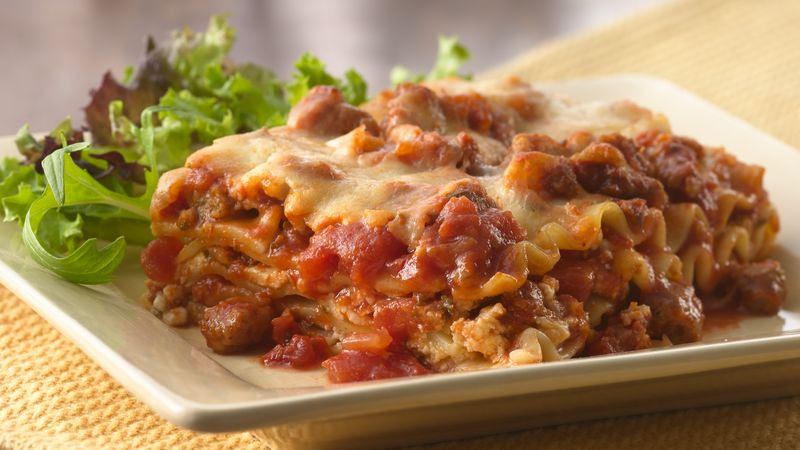

"Not So Authentic" Italian Lasagna

Wait, Lasagna with sausage?!?
I know what you're thinking right now. Anyone of Italian descent reading this right now probably has
me in their crosshairs. Forgive me for I only mean the best for you my reader when I say that you absolutely
need to start making use of sausage in your italian dishes. Why? Well why not?? No really, the fats and
flavor that are all blended together really add a strong note of umami to this dish.
One other ingredient that you will want in this other than your standards is, you guessed it. Home. Made. Sauce.
It may take a little time but its simple to make and the reward is well worth your time. All without adding many
more items to your shopping list. Follow me you betrayers of true Italian cuisine.
Ingredients
- 1 40 oz can of San Marzano Tomatoes
- Fresh Basil
- 2 pounds of your favorite sausage
- 3 cups of fresh grate parmesan cheese seperate in half
- 2 cups of pre-shredded mozzerella
- 1/2 cup of grated peccorino romano cheese
- Lasagna noodles
- 2 Tbsps of tomato paste
- 1/2 cup of chicken stock
Steps
- Add can of tomatoes to a wide bottomed skillet and add in basil. Simmer down till about half the original volume.
- While the sauce simmers down start boiling your pasta.
- Pre-heat oven to 425
- Add in half of reserved parmesan cheese and allow to melt into the sauce. Salt and pepper to taste.
- Remove sausage from casing and sear with a stainless steel skillet. Stir and breakup the meat into small bites.
- To the same skillet add in chicken stock and deglaze the fond leftover from searing the meat.
- Strain your pasta and let sit aside.
- Using a casserole dish layer the sauce, then noodles, sauce and cheese. Repeat till all ingredients are used or you fill the dish.
- Bake for 15 to 20 minutes or until cheese is bubbly
- Let sit before serving